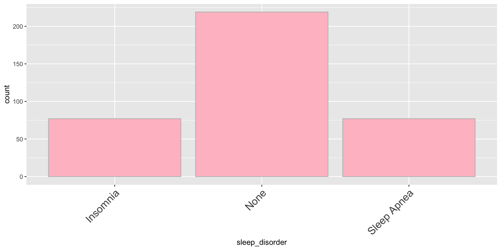

[1] 3Intro and Plotting
Alejandro Schuler
Learning Goals:
- issue commands to R using the Rstudio REPL interface
- load a package into R
- read some tabluar data into R
- visualize tabluar data using ggplot geoms, aesthetics, and facets
Basics
Console
The R console window is the left (or lower-left) window in RStudio. The R console uses a “read, eval, print” loop. This is sometimes called a REPL.
- Read: R reads what you type …
- Eval: R evaluates it …
- Print: R prints the result …
- Loop: (repeat forever)
- The box contains an expression that will be evaluated by R, followed by the result of evaluating that expression.
3is the answerIgnore the
[1]for now.R performs operations (called functions) on data and values
These can be composed arbitrarily
How do I…
- typing
?function_namegives you information about what the function does - Google is your friend. Try “function_name R language” or “how do I X in R?”. I also strongly recommend using “tidyverse” in your queries or the name of a tidyverse package (more in a moment) that has related functions
- stackoverflow is your friend. It might take some scrolling, but you will eventually find what you need
- ChatGPT!
Quadratic Equation
type: prompt incremental: true
Solutions to a polynomial equation \(ax^2 + bx + c = 0\) are given by \[x = \frac{-b \pm \sqrt{b^2 - 4ac}}{2a}\]
Figure out how to use R functions and operations for square roots, exponentiation, and multiplication to calculate x given a=3, b=14, c=-5.
- How did this feel? What was your emotional reaction when you saw the question?
- What did you learn? What did you notice?
Packages
- The amazing thing about programming is that you are not limited to what is built into the language
- Millions of R users have written their own functions that you can use
- These are bundled together into packages
- To use functions that aren’t built into the “base” language, you have to tell R to first go download the relevant code, and then to load it in the current session
- The
tidyversepackage has a function calledread_csv()that lets you read csv (comma-separated values) files into R. - csv is a common format for data to come in, and it’s easy to export csv files from microsoft excel, for instance.
# I have a file called "lupusGenes.csv" on github that we can read from the URL
genes = read_csv("https://tinyurl.com/4vjrbwce")Error in read_csv("https://tinyurl.com/4vjrbwce"): could not find function "read_csv"- This fails because I haven’t yet installed and loaded the
tidyversepackage
- Now there is no error message
- packages only need to be loaded once per R session (session starts when you open R studio, ends when you shut it down)
- once the package is loaded it doesn’t need to be loaded again before each function call
Visualizing Data
Data analysis workflow
- Read data into R (done!)
Manipulate data- Get results, make plots and figures
Getting your data in R
- Getting your data into R is easy. We already saw, for example:
read_csv()requires you to tell it where to find the file you want to read in- Windows, e.g.:
"C:\Users\me\Desktop\myfile.csv" - Mac, e.g.:
"/Users/me/Desktop/myfile.csv" - Internet, e.g.:
"http://www.mywebsite.com/myfile.csv"
- Windows, e.g.:
- If your data is not already in csv format, google “covert X format to csv” or “read X format data in R”
- We’ll learn the details of this later, but this is enough to get you started!
Looking at data
genesis now a dataset loaded into R. To look at it, just type
# A tibble: 59 × 11
sampleid age gender ancestry phenotype FAM50A ERCC2 IFI44 EIF3L RSAD2
<chr> <dbl> <chr> <chr> <chr> <dbl> <dbl> <dbl> <dbl> <dbl>
1 GSM3057239 70 F Caucasian SLE 18.6 4.28 18.0 182. 25.5
2 GSM3057241 78 F Caucasian SLE 20.3 3.02 21.1 157. 37.2
3 GSM3057243 64 F Caucasian SLE 21.4 4.00 488. 169. 792.
4 GSM3057245 32 F Asian SLE 17.1 4.49 34.0 149. 60.7
5 GSM3057247 33 F Caucasian SLE 20.9 5.00 34.4 224. 60.8
6 GSM3057249 46 M Maori SLE 15.8 3.96 466. 111. 1382.
7 GSM3057251 45 F Asian SLE 18.9 6.04 299. 157. 926.
8 GSM3057253 67 M Caucasian SLE 27.6 4.77 21.8 265. 20.6
9 GSM3057255 33 F Caucasian SLE 15.4 3.88 700. 98.6 1652.
10 GSM3057257 28 F Caucasian SLE 19.9 7.21 278. 217. 972.
# ℹ 49 more rows
# ℹ 1 more variable: VAPA <dbl>This is a data frame, one of the most powerful features in R (a “tibble” is a kind of data frame). - Similar to an Excel spreadsheet. - One row ~ one instance of some (real-world) object. - One column ~ one variable, containing the values for the corresponding instances. - All the values in one column should be of the same type (a number, a category, text, etc.), but different columns can be of different types.
The Dataset
# A tibble: 59 × 11
sampleid age gender ancestry phenotype FAM50A ERCC2 IFI44 EIF3L RSAD2
<chr> <dbl> <chr> <chr> <chr> <dbl> <dbl> <dbl> <dbl> <dbl>
1 GSM3057239 70 F Caucasian SLE 18.6 4.28 18.0 182. 25.5
2 GSM3057241 78 F Caucasian SLE 20.3 3.02 21.1 157. 37.2
3 GSM3057243 64 F Caucasian SLE 21.4 4.00 488. 169. 792.
4 GSM3057245 32 F Asian SLE 17.1 4.49 34.0 149. 60.7
5 GSM3057247 33 F Caucasian SLE 20.9 5.00 34.4 224. 60.8
6 GSM3057249 46 M Maori SLE 15.8 3.96 466. 111. 1382.
7 GSM3057251 45 F Asian SLE 18.9 6.04 299. 157. 926.
8 GSM3057253 67 M Caucasian SLE 27.6 4.77 21.8 265. 20.6
9 GSM3057255 33 F Caucasian SLE 15.4 3.88 700. 98.6 1652.
10 GSM3057257 28 F Caucasian SLE 19.9 7.21 278. 217. 972.
# ℹ 49 more rows
# ℹ 1 more variable: VAPA <dbl>This is a subset of a real RNA-seq (GSE112087) dataset comparing RNA levels in blood between lupus (SLE) patients and healthy controls.
- 29 SLE Patients, 30 Healthy Controls
- We have basic metadata as well as the levels of multiple genes in blood.
- Let’s see if we can find anything interesting from this already-generated data!
Investigating a relationship
Let’s say we’re curious about the relationship between two genes RSAD2 and IFI44.
- Can we use R to make a plot of these two variables?

ggplot(dataset)says “start a chart with this dataset”+ geom_point(...)says “put points on this chart”aes(x=x_values y=y_values)says “map the values in the columnx_valuesto the x-axis, and map the values in the columny_valuesto the y-axis” (aesis short for aesthetic)
ggplot
ggplotis short for “grammar of graphics plot”- This is a language for describing how data get linked to visual elements
ggplot()andgeom_point()are functions imported from theggplot2package, which is one of the “sub-packages” of thetidyversepackage we loaded earlier
Exercise: comparing expression levels
Make a scatterplot of phenotype vs IFI44 (another gene in the dataset). The result should look like this:
Investigating a relationship
Let’s say we’re curious about the relationship between RSAD2 and IFI44.

- What’s going on here? It seems like there are two clusters.
- What is driving this clustering? Age? Sex? Ancestry? Phenotype?
Aesthetics
- Aesthetics aren’t just for mapping columns to the x- and y-axis
- You can also use them to assign color, for instance
- Aesthetics aren’t just for mapping columns to the x- and y-axis
- We could have used a shape
- Or size
- This one doesn’t really make sense because we’re mapping a categorical variable to an aesthetic that can take continuous values that imply some ordering
- If we set a property outside of the aesthetic, it no longer maps that property to a column.
- However, we can use this to assign fixed properties to the plot that don’t depend on the data
Exercise: Plot
Can you recreate this plot?
Exercise [together]
What will this do? Why?
Geoms
- Both these plots represent the same data, but they use a different geometric representation (“geom”)
- e.g. bar chart vs. line chart, etc.
- R graph gallery is a great resource to help you design your plot and pick the right geom: r-graph-gallery.com
- Different geoms are configured to work with different aesthetics.
- e.g. you can set the shape of a point, but you can’t set the “shape” of a line.
- On the other hand, you can set the “line type” of a line:
- Use e.g.
?geom_pointto see what aesthetics are expected or allowed
- It’s possible to add multiple geoms to the same plot

- To assign the same aesthetics to all geoms, pass the aesthetics to the
ggplotfunction directly instead of to each geom individually
- You can also use different mappings in different geoms
Exercise
Use google or other resources to figure out how to receate this plot in R:
ggplot(genes) +
...- What might the name of this geom be? What properties of the plot (aesthetics) are mapped to what columns of the data?
- If you accomplish making the plot, can you figure out how to change the colors of the groups?
Facets
- Aesthetics are useful for mapping columns to particular properties of a single plot
- Use facets to generate multiple plots with shared structure
facet_wrapis good for faceting according to unordered categories
facet_gridis better for ordered categories, and can be used with two variables
Exercise
Use ggplot to investigate the relationship between gene expression and lupus using any combination of any kinds of plots that you like. Which genes are most associated with lupus? Does this vary by ancestry, age, or assigned sex at birth?
For some plots it may be helpful to reformat your data using this code (we’ll learn how to do this on day 4):
gene_names = names(genes)[6:11]
reformatted_genes = pivot_longer(genes, all_of(gene_names), names_to='gene', values_to='expression')
reformatted_genes# A tibble: 354 × 7
sampleid age gender ancestry phenotype gene expression
<chr> <dbl> <chr> <chr> <chr> <chr> <dbl>
1 GSM3057239 70 F Caucasian SLE FAM50A 18.6
2 GSM3057239 70 F Caucasian SLE ERCC2 4.28
3 GSM3057239 70 F Caucasian SLE IFI44 18.0
4 GSM3057239 70 F Caucasian SLE EIF3L 182.
5 GSM3057239 70 F Caucasian SLE RSAD2 25.5
6 GSM3057239 70 F Caucasian SLE VAPA 159.
7 GSM3057241 78 F Caucasian SLE FAM50A 20.3
8 GSM3057241 78 F Caucasian SLE ERCC2 3.02
9 GSM3057241 78 F Caucasian SLE IFI44 21.1
10 GSM3057241 78 F Caucasian SLE EIF3L 157.
# ℹ 344 more rows